1Escala
O teclado ocupa 243 dos 900 px (27% da altura) em #FCFCFC sobre #181818. É a área mais clara e mais contrastada da tela: a mobília fala mais alto que a partitura.
Análise da página publicada e três protótipos navegáveis, montados com os dados reais do acervo: os documentos e suas seções, os 107 fundamentos, a tabela de 2026 do Calendário e os seis modelos de Templates. Um caminho mantém o piano, outro o troca pela regência, o terceiro o transforma em onda.
A página funciona, é acessível e tem uma ideia excelente no centro. O que falta é elegância, e a falta tem causas mensuráveis. Os números abaixo vêm da renderização a 1.440 × 900 e do próprio DESIGN.md.
O teclado ocupa 243 dos 900 px (27% da altura) em #FCFCFC sobre #181818. É a área mais clara e mais contrastada da tela: a mobília fala mais alto que a partitura.
Cada tecla branca mede cerca de 157 × 243 px, razão 1 : 1,5. Num piano, a tecla visível tem 23,5 × 150 mm, razão 1 : 6,4. Nove teclas cruzando 1.440 px leem como brinquedo; a elegância de um teclado vem do ritmo de muitas teclas estreitas e de vãos finos.
A primeira tela abre o Calendário com campos, controle segmentado e caixa de seleção. O PRODUCT.md diz que a vitrine lidera; a entrada mostra um formulário. São seis zonas com o mesmo volume e nenhuma protagonista.
Laranja em oito marcas (I a IV, 01 a 04) e âmbar em três blocos grandes (resultado, status, Templates). Duas luzes disputam o olhar e nenhuma conduz. Luxo é economia de acento.
Zalando Sans Expanded 800 no título, nas ferramentas, no resultado e nos nomes dos modelos. Larga e pesada em toda parte, sem contraste de peso e sem uma voz baixa. Soa como capa de tênis, não como programa de concerto.
"Passe o cursor e toque uma tecla", em caixa alta espaçada, ocupa o centro da tampa. A página explica a metáfora em vez de deixá-la soar.
Com a página travada em 100dvh, o índice da capa (Documentos, Manuais, Anexos) aparece decepado na dobra, e a leitura fica com 565 px de altura entre a barra e a tampa.
Papel frio #FCFCFC contra o creme #F2EFE9 do ECHO; Commissioner, Azeret Mono e Schibsted Grotesk ficaram na mãe. A filha herdou só a face do wordmark, e nada da Cadeia operacional nem dos Achados.
A metáfora é sonora e a página é muda: sem onda, sem ressonância, sem altura de nota. O arpejo de abertura apenas acende as teclas em sequência.
O trecho real de Mi a Fá. Nove brancas e cinco pretas na posição verdadeira, com cada preta entre os documentos de que é versão em PDF. É o detalhe mais inteligente da página, e as três propostas o preservam, literal ou transformado.
A engenharia. Rotas por hash, foco errante com setas, Home e End, rótulos para leitor de tela, respeito a movimento reduzido, a ferramenta ao lado da leitura e o montador em tela inteira. Nada disso precisa ser refeito; muda a pele e a coreografia.
A pauta como divisor. A ideia é boa e hoje está desenhada como uma barra de progresso. Nas propostas ela volta com barras de compasso, marcas de ensaio e notas.
O piano fica e ganha a sala de concerto: laca, marfim, latão e um único foco de luz sobre a folha.
Mantém o piano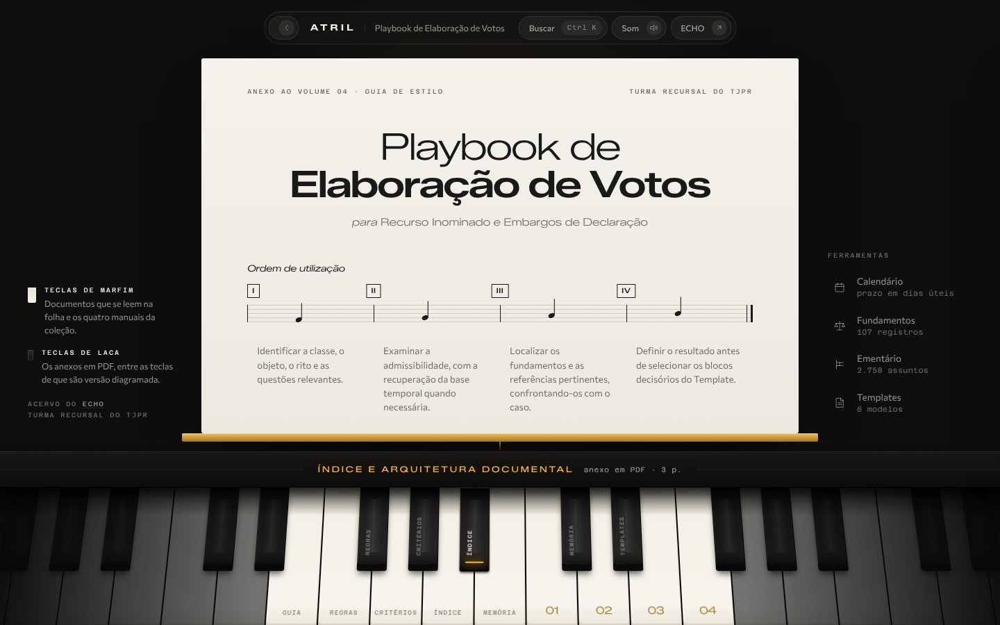
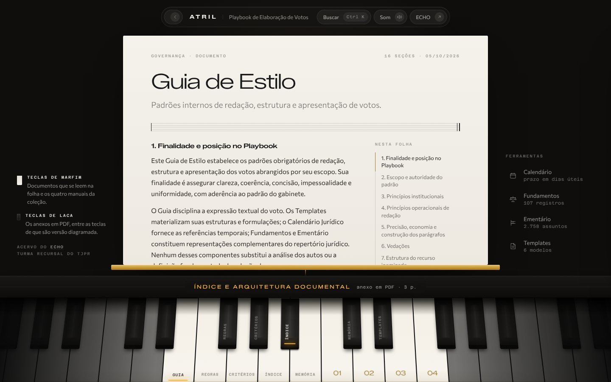
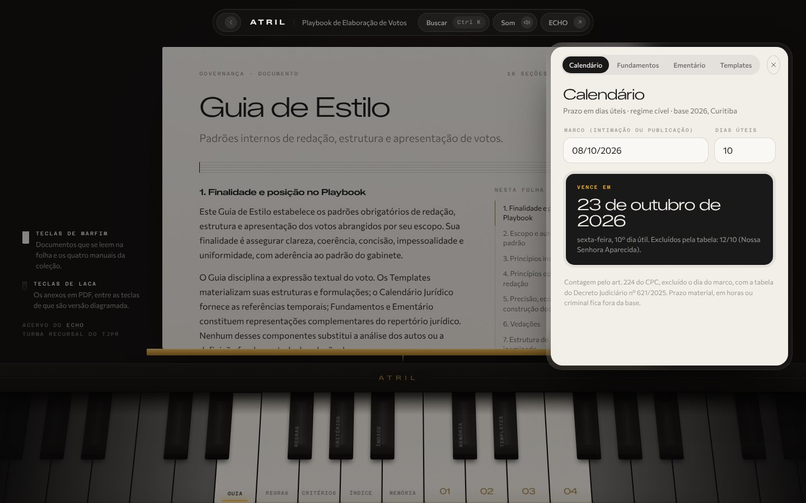
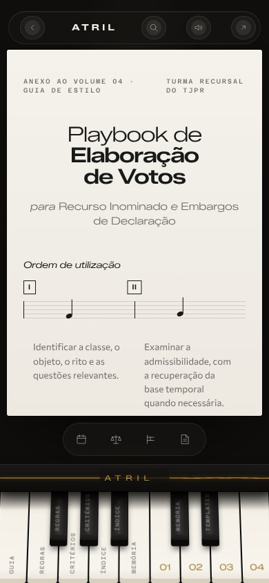
A página escurece e a folha passa a ser a única superfície clara, em marfim (#F2EFE9, o papel do ECHO), sob um foco quente. Ela se apoia num friso de latão: o átril deixa de ser nome e vira objeto. O título troca o peso 800 por 300 com o miolo em 600, e a largura da Expanded passa a soar como gravação de concerto.
O teclado ganha proporção real: teclas estreitas, vãos de 2 px, marfim com lábio frontal e laca com reflexo. As 14 teclas do acervo ficam no centro; o instrumento continua para os lados e se perde na sombra. Tocar uma tecla afunda, acende um filete âmbar na ponta e solta uma onda na tampa que se espalha a partir dela. Com o som ligado, cada tecla toca a sua nota de Mi4 a Fá5.
As ferramentas saem da primeira tela e vão para um trilho discreto que abre uma gaveta de vidro com núcleo de marfim. A capa respira: título, subtítulo e a ordem de utilização escrita como compassos com marcas de ensaio e uma frase ascendente.
O piano sai e entra a regência: o acervo inteiro vira a partitura que o maestro lê, uma pauta por material.
Escolhida · versão ajustada Troca o piano pela regência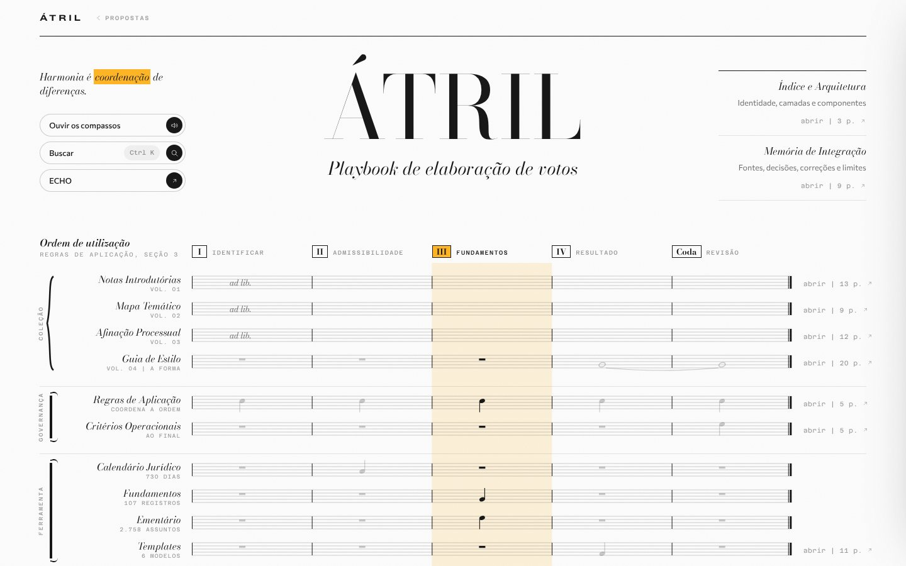
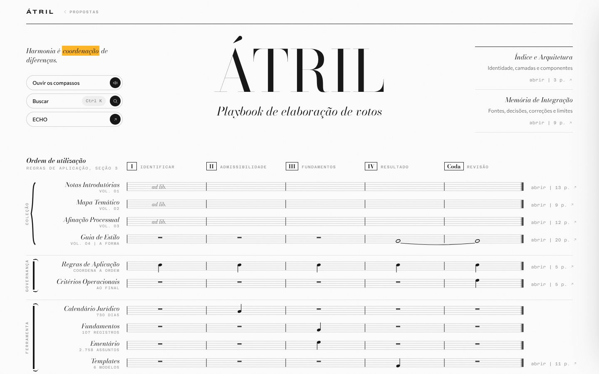
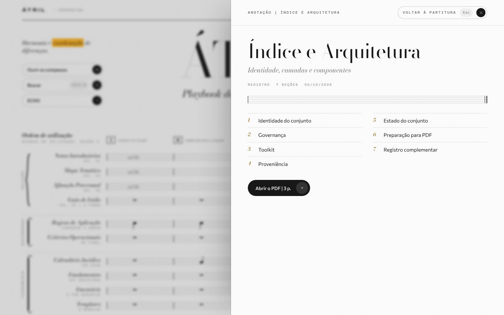
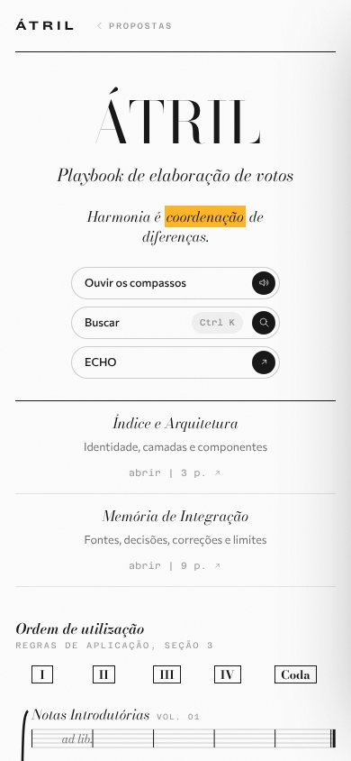
A página abre como a folha de rosto de uma partitura, sobre o papel #FCFCFC: ÁTRIL em Bodoni Moda e o subtítulo Playbook de elaboração de votos. À esquerda, a epígrafe do ECHO, Harmonia é coordenação de diferenças, com o marca-texto âmbar da mãe, e logo abaixo os comandos: ouvir os compassos, buscar e voltar ao ECHO. À direita, no lugar das linhas de origem, ficam duas anotações sem título: Índice e Arquitetura e Memória de Integração, o Registro, que sai do sistema porque não toca na ordem.
O sistema é uma matriz de uso verdadeira. Os compassos são a ordem da seção 3 das Regras de Aplicação (I a IV e a coda de revisão). O primeiro naipe é a Coleção, presa pela chaveta do piano, com os volumes 01 a 03 ad libitum e o Guia de Estilo por último, sustentado de IV até a coda. Logo abaixo, a Governança: as Regras como pedal em todos os compassos e os Critérios na coda. Depois a Ferramenta: Calendário em II, Fundamentos e Ementário em III, Templates em IV.
Ler na vertical é ler um passo. Passar o cursor por um compasso acende a coluna e esmaece o resto; com o som ligado, o compasso soa como acorde. As alturas foram escolhidas para que III soe Dó maior, IV fique suspenso e a coda resolva. Clicar num nome abre o material sobre a partitura; abrir, ao fim de cada pauta, leva ao PDF.
A filha repete o gesto da mãe e o piano vira onda: crista em cada tecla branca, vale em cada preta.
Transforma o piano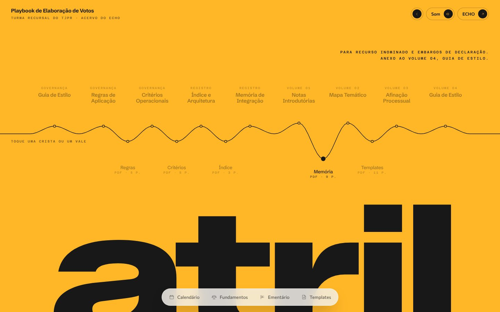
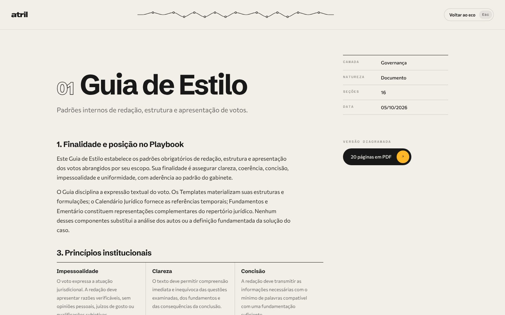
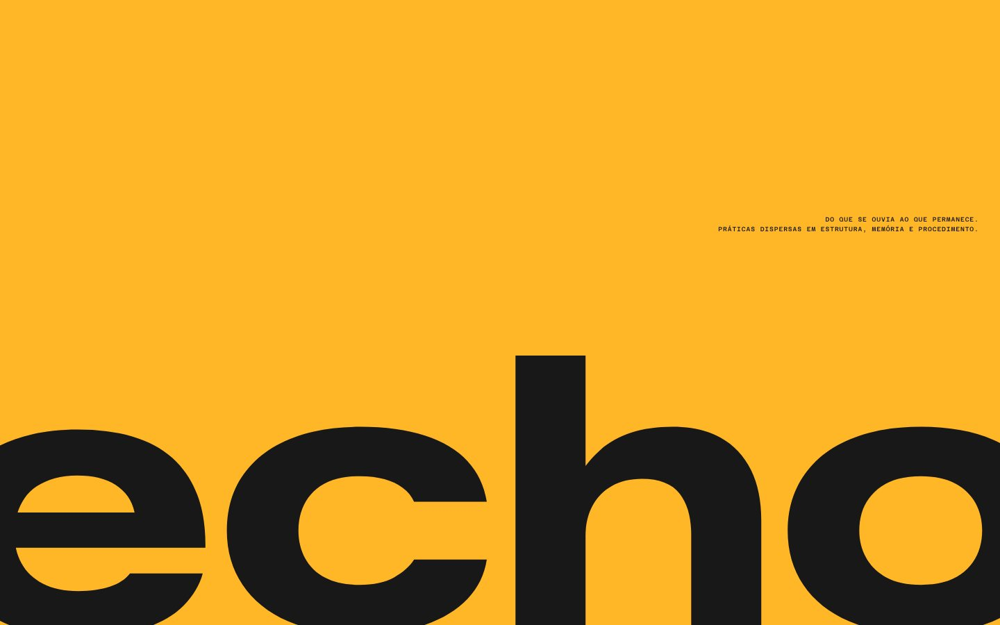
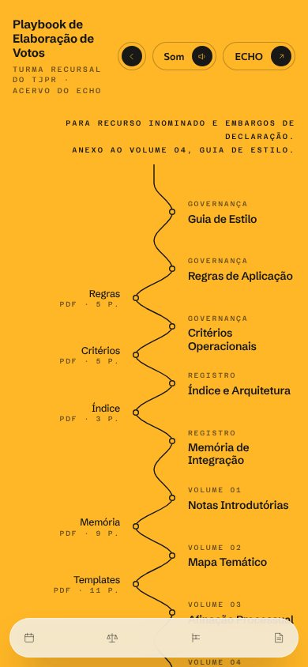
A abertura é a do ECHO com outra palavra: campo âmbar e "atril" em caixa baixa, Zalando Sans Expanded 800, sangrando a borda inferior. Entre o lema e a palavra corre uma única linha de tinta.
Essa linha é o teclado. Nos 17 pontos a meio passo de tecla, ela sobe nas brancas, desce nas pretas e passa por zero onde o piano não tem preta, entre Mi e Fá e entre Si e Dó. A geometria do teclado sobrevive como traço de som, legível para quem conhece piano e apenas bonita para quem não conhece. Tocar uma crista ou um vale faz a corda vibrar com mola física e, com o som ligado, soa a nota daquela tecla. No celular a corda fica de pé.
Abaixo, uma banda de laca repete dois componentes da mãe com os dados da filha: a Cadeia operacional vira a ordem de utilização, e os Achados viram 107, 2.758, 730 e 6, cada um abrindo a sua ferramenta. A folha de leitura sobe do pé da tela com numeral vazado e ficha no idioma do ECHO, e a onda encolhe para o topo como navegação.
| A · Noturno | B · Partitura geral | C · Eco | |
|---|---|---|---|
| Piano | Literal, refeito em proporção real | Sai; resta a chaveta da Coleção | Transformado em onda com a mesma geometria |
| Regência | Implícita, na estante e na ordem em compassos | Explícita: partitura geral, naipes, marcas de ensaio, acordes | Implícita, na corda que vibra |
| Leitura longa | Boa: folha clara sob foco | A melhor: tudo em papel, serifa de leitura | Boa: a folha cobre a tela inteira |
| Parentesco com o ECHO | Papel e família tipográfica | Papel, família tipográfica e o marca-texto âmbar | O mais forte: abertura, Cadeia e Achados |
| A estrutura informa? | As teclas nomeiam os materiais | Sim: cada nota diz em que passo o material entra | A onda guarda a posição de brancas e pretas |
| Primeira tela | Capa e teclado; ferramentas fechadas | Folha de rosto e quase todo o sistema | Campo âmbar, onda e palavra |
| Custo | Médio | Baixo a médio | Médio |
A Partitura geral é a única em que a metáfora carrega informação. Não é um piano desenhado nem uma onda bonita: é a ordem de utilização das Regras posta na forma que um regente lê, e ler na vertical responde à pergunta prática de quem redige ("o que eu uso neste passo?"). Ela é clara para leitura longa, diferencia o ATRIL do ECHO sem sair da família e custa menos que as outras, porque troca a geometria de perspectiva por SVG plano.
Se o piano for inegociável, A. É a evolução direta do que existe, mantém a Regra do Instrumento Inteiro e conserta, uma a uma, as nove causas do diagnóstico. C é a melhor vitrine e a pior mesa de trabalho; serve se o ATRIL for antes de tudo uma peça do portfólio.
A versão ajustada sobe a Coleção para o primeiro naipe, terminando no Guia, põe a Governança logo depois, tira o Registro do sistema para as anotações da folha de rosto, intitula a página ÁTRIL, leva os comandos para a coluna da epígrafe, enxuga a folha de rosto e volta ao fundo #FCFCFC.
Pontos que mexem em compromissos escritos no PRODUCT.md e no DESIGN.md. O primeiro já foi decidido.
A partitura escolhida volta ao papel da paleta fechada. A paleta do PRODUCT.md e a Regra da Laca e do Papel seguem valendo sem emenda.
Os protótipos retiram o #C84D00 da interface e deixam o âmbar como luz única. O laranja segue nas capas dos manuais, onde é a cor da coleção impressa.
Com B, a página rola, ainda que pouco. A Regra do Instrumento Inteiro, do DESIGN.md, sai junto com o teclado.
O título agora é ÁTRIL, com acento. O PRODUCT.md registra ATRIL, sem acento, como grafia dicionarizada; se o acento é intencional, o registro precisa ser atualizado.
A fonte canônica é assets/atril/fonte: build/pagina.html, build/css/interface.css e build/interface.js, regenerados por build.py. O DESIGN.md precisa ser reescrito para a direção escolhida.
São protótipos de direção, com os dados reais. O Calendário calcula pela tabela de 2026 (08/10/2026 mais 10 dias úteis vence em 23/10/2026, com 12/10 excluído, como na página publicada) e recusa prazos que passam de 31/12/2026. Fundamentos busca nos 107 registros. O Ementário mostra uma amostra de 5 dos 2.758 assuntos. Templates lista os seis modelos, mas o montador não foi refeito.
Só o Guia de Estilo traz texto corrido; os demais documentos mostram as suas seções reais. A busca global foi simplificada. O som é sintetizado no navegador e começa desligado.